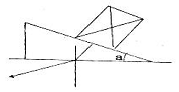
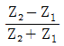
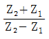
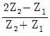
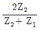
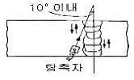
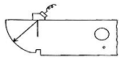
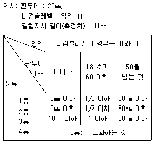

초음파비파괴검사산업기사(구) (2009-07-26 기출문제)
1과목: 초음파탐상시험원리
1. 강재로 진행하는 주파수 4MHz 인 종파의 파장과 아크릴로 진행하는 종파의 파장이 같으려면 약 AC MHz 의 주파수를 아크릴에 사용하여야 하는가? (단, 아크릴, 강재의 종파속도는 각각 2730m/s, 5900m/s 이다.)
- 1.8
- 3.6
- 5.8
- 8.6
(정답률: 알수없음)

2. 다음 중 초음파탐상시험시 잔류에코의 발생에 대한 설명으로 가장 옳은 것은?
- 측정범위를 길게 하면 잔류에코가 발생하기 쉬워진다.
- 잔류에코의 발생은 초음파탐상기의 고장이 주 원인이다.
- 송신펄스로 부터 수신부의 감도가 저하할 때 잔류에코가 발생한다.
- 감쇠가 적은 재료에서 펄스 반복주파수를 너무 높게 하면 잔류에코가 발생한다.
(정답률: 알수없음)
3. 그림과 같이 수직탐촉자를 합성수지 쐐기를 이용하여 45° 경사각 탐촉자를 만들어 강 용접부를 탐상하고자 한다. 그림에서 a 를 약 몇 도로 가공하여야 하는가? (단, 각 매질에서의 음파속도는 합성수지 : 종파 2600m/s, 횡파 1200m/s 강 : 종파 5900m/s, 횡파 3200m/s 이다.)

- 8.3°
- 15.4°
- 18.2°
- 35.1°
(정답률: 알수없음)
4. 탐촉자의 진동자 재질 중 티탄산바륨(Barium Titanate)의 특징이 아닌 것은?
- 초음파의 송·수신 효율이 좋다.
- 불용성이며 화학적으로 안정하다.
- 내마모성이 낮아 수명 단축이 심하다.
- 100°C 까지는 온도의 영향을 받지 않는다.
(정답률: 알수없음)
5. 다음 중 경사각탐상에 사용하는 4가지 기본 주사방법이 아닌 것은?
- 전후주사
- 진자주사
- 독립주사
- 목돌림주사
(정답률: 알수없음)
6. 초음파탐상시험에 적용되는 초음파의 특성이 아닌 것은?
- 파장이 짧고 직진성이 있다.
- 원거리에서 초음파 빔은 확산되어 에너지는 약해진다.
- 결정의 입계면에서는 전파 속도와 에너지가 증폭한다.
- 액체와 고체의 경계면에서 반사, 굴절, 회전하는 현상이 일어난다.
(정답률: 알수없음)
7. 방사선투과시험시 쉽게 검출되는 불연속 중 콜드셧(cold shut)은 주로 어느 공정에서 발생하는가?
- 주조
- 단조
- 압출
- 인발
(정답률: 알수없음)
8. 다음 중 비파괴검사의 신뢰도에 영향을 미치는 중요 요소와 거리가 먼 것은?
- 검사 장비
- 제품의 용도
- 검사 기술자의 능력
- 검출해야 할 결함의 크기
(정답률: 알수없음)
9. 다음 중 와전류탐상시험에서 시험주파수 선정시 고려해야 할 요소와 가장 거리가 먼 것은?
- 표피 효과
- 코일임피던스 특성
- 프로브의 속도
- 프로브의 형태
(정답률: 알수없음)
10. 다른 비파괴검사법과 비교하여 초음파탐상시험의 가장 큰 장점은?
- 표면 적하의 얕은 결함 검출이 쉽다.
- 재현성이 뛰어나며 기록보존이 용이하다.
- 침투력이 매우 높아 아주 깊은 곳의 결함검출이 용이하다.
- 내부 불연속의 모양, 위치, 크기 및 방향을 정확히 측정할 수 있다.
(정답률: 알수없음)
11. 초음파탐상시험과 음향방출시험에 대한 다음 설명 중 초음파탐상시험에 해당되는 것은?
- 시험체 결정입자의 영향을 크게 받는다.
- 운전 중 감시와 균열 발생 진행에 응용된다.
- 탐촉자는 시험체에서 탄성파 방출 시에만 수신한다.
- 외적으로 하중을 부과해야만 결함 검출이 가능하다.
(정답률: 알수없음)
12. 다음의 자화전류 종류 중 자분탐상시험으로 표면하(下)의 결함을 검출하는데 가장 적합한 것은?
- 단상반파정류
- 단상전파정류
- 3상반파정류
- 3상전파정류
(정답률: 알수없음)
13. 다음 누설검사법 중 가장 미세한 누설량을 검출할 수 있는 것은?
- 기포누설시험(가압법)
- 기포누설시험(진공법)
- 헬륨누설시험(진공법)
- 암모니아누설시험(진공법)
(정답률: 알수없음)
14. 침투탐상시험에서 이원성 침투액을 사용하는 가장 큰 특성은?
- 과잉 세척의 우려가 없다
- 탐상감도가 매우 우수하다
- 실외 적용시험에만 적합하다
- 밝은 곳이나 어두운 장소에서도 시험이 가능하다.
(정답률: 알수없음)
15. 다음 중 환봉류의 와전류탐상시험시 시험품을 관통시켜 검사하는 방법으로 결함 위치를 가장 정확히 측정할 수 있는 것은?
- 내삽형 코일(inner coil)
- 관통 코일(encircling coil)
- 펜케이크 코일(pancake coil)
- 회전형 프로브코일(spinning probe coil)
(정답률: 알수없음)
16. 다음 비파괴검사법 중 강의 피로균열에 대한 결함의 검출 감도가 가장 뒤떨어지는 것은?
- 자분탐상시험
- 초음파탐상시험
- 침투탐상시험
- 방사선투과시험
(정답률: 알수없음)
17. 다음 중 제품이나 부품을 전체적으로 모니터링 할 수 있는 비파괴시험 방법은?
- 육안시험
- 음향방출시험
- 초음파탐상시험
- 와전류탐상시험
(정답률: 알수없음)
18. 다음 중 시험체와 시험체 주위의 압력차를 이용하여 수행하는 비파괴검사법은?
- 누설검사
- X선 회절법
- 중성자투과검사
- 와전류탐상검사
(정답률: 알수없음)
19. 다음 중 침투탐상시험으로 쉽게 검출할 수 있는 결함은?
- 블로 홀
- 내부 기공
- 슬래그 혼입
- 표면의 피로균열
(정답률: 알수없음)
20. 철강 부품의 단조시 단조 겹침이 표면에 발생하였을 때 이 불연속의 탐상에 가장 적합한 비파괴검사법은?
- 자분탐상시험
- 초음파탐상시험
- 침투탐상시험
- 방사선투과시험
(정답률: 알수없음)
2과목: 초음파탐상검사
21. 다음 중 경사각 탐상시의 탐상강도 조정에 사용할 수 없는 시험편은?
- IIW
- RB-A6
- STB-A3
- STB-G-V5
(정답률: 알수없음)
22. 초음파탐상검사에서 브라운관상의 에코높이가 처음 값에서 20%로 떨어졌다면 약 몇 dB 낮아진 것인가?
- 8
- 10
- 12
- 14
(정답률: 알수없음)
23. 시험체의 두께 방향으로 결함의 모양을 단면으로 볼 수 있도록 표현하는 초음파탐상 주사 방법은?
- A-스캔
- B-스캔
- C-스캔
- MA-스캔
(정답률: 알수없음)
24. 초음파탐상검사시 탐촉자의 진동자 두께와 주파수와의 관계를 옳게 설명한 것은?
- 두께와는 전혀 무관하다.
- 얇을수록 높은 주파수를 발생한다.
- 두꺼울수록 높은 주파수를 발생한다.
- 동파는 두꺼울수록, 횡파는 얇을수록 높은 주파수를 발생한다.
(정답률: 알수없음)
25. 초음파탐상검사시 펄스에서 나오는 전압은 100V~1000V 사이인데 반하여 증폭기로 들어가는 에코의 전압은 어느 정도인가?
- 50[V]
- 10[V]
- 1~5[V]
- 0.001~1[V]
(정답률: 알수없음)
26. 용접부의 경사각탐상에서 결함위치를 측정하는 경우에 대한 설명으로 가장 옳은 것은?
- 최대 에코높이가 얻어 졌을 때의 탐촉자- 용접부거리, 빔진행거리 및 굴절각의 관계로 부터 구한다.
- 빔진행거리가 가장 짧게 얻어졌을 때의 빔진행 거리와 굴절각과의 관계로부터 구한다.
- 탐촉자-용접부거리와 굴적각과의 관계로부터 구한다.
- 입사점과 굴적각으로부터 계산에 의해 구한다.
(정답률: 알수없음)
27. 펄스반사식 초음파 수직탐촉자를 이용한 판재의 왕복투과시간이 9.15x10-6s 였다. 판재의 두께는 약 몇 mm 인가?(단, 판재의 속도는 5925m/s 이다.)
- 14
- 27
- 54
- 67
(정답률: 알수없음)
28. 용접부 탐상시 기준감도를 초과하는 결함 에코가 나타났다. 이 때 12dB 를 감소시키니 결함에코의 감도가 기준감도와 동일하게 나타났다면 실제 결함에코의 감도는 기준감도의 약 몇 배가 되는가?
- 2배
- 4배
- 6배
- 8배
(정답률: 알수없음)
29. 초음파가 매질을 통과함에 따라 에너지의 손실이 발생하는데 이와 같은 감쇠의 주된 원인은?
- 굴절 및 반사
- 산란 및 흡수
- 음속 및 임피던스
- 공진 및 변이
(정답률: 알수없음)
30. 음향임피던스가 각각 Z1과 Z2인 두 매질의 경계면에 수직하게 매질 1 로부터 매질 2 로 초음파가 입사 될 때 음압 반사율을 나타내는 식으로 옳은 것은?




(정답률: 알수없음)
31. 초음파탐상검사에서 결함길이에 대한 설명으로 가장 옳은 것은?
- 결함 길이는 탐상면으로부터의 결함 깊이이다.
- 결함 길이는 에코높이 구분성의 영역을 나타낸다.
- 결함 길이는 결함의 판두께 방향의 수직한 치수를 나타낸다.
- 결함 길이는 결함의 판두께에 평행한 방향의 치수를 나타낸다.
(정답률: 알수없음)
32. 초음파탐상검사에 대한 다음 설명 중 옳은 것은?
- 수직탐촉자는 입사각을 90도로 하여 종파를 재료에 투과시키는 것이다.
- 표면파를 발생시키는 탐촉자는 일반적인 경사각탐촉자 구조와 완전히 다르다.
- 경사각 탐촉자는 진동자 앞에 쐐기를 사용해 시험체 내부에 횡파를 투과시키는 것이다.
- 판파를 발생시키는 탐촉자는 경사각탐촉자의 일종으로 종파의 다른 표현이다.
(정답률: 알수없음)
33. 지름 500mm 의 주강 롤(roll)을 수직탐상에 의해 결함을 평가하려 할 때 다음 중 가장 적합한 수직 탐촉자는?
- 4Z30N
- 5Q20N
- 1Q30N
- 10Z30N
(정답률: 알수없음)
34. 초음파탐상기의 탐상도형에 대한 설명 중 틀린것은?
- 저면에코는 다중에코가 등간격으로 나타난다.
- 송신펄스 다음에 처음으로 나타나는 에코는 반드시 저면 에코이다.
- 라미네이션 결함에코는 다중에코가 등간격으로 여러개 나타나는 경우가 많다.
- 표면에코와 저면에코사이에 에코가 나타나면 라미네이션이나 비금속 개재물 등의 내부결함이 존재한다고 생각할 수 있다.
(정답률: 알수없음)
35. 다음 중 일반적으로 단조물, 압연물, 압출물 등에 있는 결함들은 어느 방향으로 초음파탐상검사를 하는 것이 가장 좋은가?
- 구분 없이 여러 방향으로
- 단조나 압연의 같은 방향으로
- 단조나 압연방향에 수직 방향으로
- 단조나 압연방향에 45도 각도인 방향으로
(정답률: 알수없음)
36. 다음 중 Delay-tip(Stand-off)형의 접촉탐촉자는 주로 어디에 사용되는가?
- 감쇠측정
- 결함의 검출
- 파형특성 연구
- 박판재료의 두께측정
(정답률: 알수없음)
37. 그림과 같은 주사방법은?

- 진자 주사
- 탠덤 주사
- 두갈래 주사
- 경사평행 주사
(정답률: 알수없음)
38. 그림은 탐촉자의 무엇을 측정하는 것인가?

- 입사점
- 감도 여유값
- 원거리 분해능
- 증폭의 직선성
(정답률: 알수없음)
39. 초음파가 어떤 두 매질 내에서 굴절이 일어날 수 있는 필수 조건만으로 옳은 것은?
- 두 매질의 속도가 다르고 초음파가 경사로 입사할 때
- 두 매질의 속도와 음향 임피던스가 다를 때
- 1차 매질에서의 입사각이 제 2임계각 이상일 때
- 1차 매질에 입사하는 음파의 종류가 반드시 종파일 때
(정답률: 알수없음)
40. 초음파탐상검사를 수행한 결과 탐상기의 화면에 횡축을 따라 탐촉자의 위치가 나타나고, 종축을 따라 반사체까지의 초음파 전파시간이 표시되었다면 이와 같은 표시방법은 다음 중 무엇에 해당하는가?
- 기본표시(A scan 표시)
- 단면표시(B scan 표시)
- 평면표시(C scan 표시)
- 파형분석표시(Feature scan 표시)
(정답률: 알수없음)
3과목: 초음파탐상관련규격 및 컴퓨터활용
41. 강 용접부의 초음파탐상 시험방법(KS B 0896)에 따른 탐상면의 거칠기가 80μm 이상인 용접부를 검사할 때 사용되는 접촉매질로 옳은 것은?
- 기계유 20번
- 기계유 30번
- 농도 50% 의 글리세린 수용액
- 농도 75% 이상인 글리세린 수용액
(정답률: 알수없음)
42. 강 용접부의 초음파탐상 시험방법(KS B 0896)에 따른 다음 표를 이용하여 제시된 결함지시의 등급으로 옳은 것은?

- 1류
- 2류
- 3류
- 4류
(정답률: 알수없음)
43. 강 용접부의 초음파탐상 시험방법(KS B 0896)으로 탐상시 DAC 회로를 사용할 때 에코높이 구분선의 작성방법으로 틀린 것은?
- 표준에코 높이 구분선과 6dB 씩 다른 에코높이 구분선을 3개 이상 작성한다.
- A2형계 표준시험편의 φ2x2mm 의 표준구멍을 기준으로 사용한다.
- RB-4의 표준구멍을 기준으로 사용하기도 한다.
- 에코높이 구분선은 원칙적으로 실제 사용하는 탐촉자를 사용해 작성한다.
(정답률: 알수없음)
44. 강 용접부의 초음파탐상 시험방법(KS B 0896)에서 규정한 탠덤탐상의 적용 가능한 최소 판두께는?
- 10mm
- 20mm
- 30mm
- 40mm
(정답률: 알수없음)
45. 보일러 및 압력용기에 대한 용접부의 초음파탐상시험(ASME Sec.V, Art.4)에서 용접부의 두께가 25mm (즉, 1인치)일 때 기본 교정시험편의 구멍 지름으로 옳은 것은?
- 2.4mm(3/32인치)
- 3.2mm(1/8인치)
- 4.8mm(3/16인치)
- 6.3mm(1/4인치)
(정답률: 알수없음)
46. 강 용접부의 초음파탐상 시험방법(KS B 0896)에 의한 탐상면, 탐상의 방향 및 방법에 대한 설명중 틀린 것은?
- 판두께가 90mm 인 T이음은 양면 한쪽에서 직사법으로 검사한다.
- 판두께가 110mm인 맞대기이음은 양면 양쪽에서 직사법으로 검사한다.
- 판두께가 100mm 인 T이음은 한면 양쪽에서 직사법 및 1회 반사법으로 검사한다.
- 판두께가 50mm 인 맞대기이음은 한면 양쪽에서 직사법 및 1회 반사법으로 검사한다.
(정답률: 알수없음)
47. 금속재료의 펄스반사법에 따른 초음파탐상 시험방법 통칙(KS B 0817)의 특별점검에 해당하지 않는 것은?
- 성능에 관계된 수리를 한 경우
- 특별히 점검할 필요가 있다고 판단된 경우
- 시험이 정상적으로 이루어지는가를 검사하는 경우
- 특수한 환경 아래서 사용하여 이상이 있다고 생각된 경우
(정답률: 알수없음)
48. 보일러 및 압력용기에대한 용접부의 초음파탐상검사(ASME Sec.V,Art.4 app.C)에 따라 용접부를 수직탐상 하는 경우, 수직 빔 교정의 일반적인 절차를 위해 필요한 구멍의 크기는?
- 와 T 측 구멍
- 와 T 측 구멍
- 와 T 측 구멍
- 0.5스킵과 2스킵에서 최대신호가 오는 구멍
(정답률: 알수없음)
49. 보일러 및 압력용기에대한 용접부의 초음파탐상검사(ASME Sec.V,Art.4)에서 탐상 온도에 대한 설명으로 옳은 것은?
- 접촉법에서 교정시험편과 검사 표면 간의 온도차는 30°F 이내이어야 한다
- 접촉법에서 교정시험편과 검사 표면 간의 온도차는 25°F 이내이어야 한다
- 수침법에서 교정시 접촉매질의 온도는 검사시 접촉 매질온도의 30°F 이내이어야 한다
- 수침법에서 교정시 접촉매질의 온도는 검사시 접촉 매질온도의 35°F 이내이어야 한다
(정답률: 알수없음)
50. 보일러 및 압력용기에 대한 용접부의 초음파탐상시험(ASME Sec.V,Art.4)에서 일반적인 경우 탐촉자의 이동속도는 몇 ㎜/s 를 초과할 수 없는가?
- 150㎜/초(6인치/초)
- 150㎜/분(6인치/분)
- 225㎜/초(9인치/초)
- 225㎜/분(9인치/분)
(정답률: 알수없음)
51. 보일러 및 압력용기에 대한 초음파탐상검사(ASEM Sec. V, Art.23 SA-577)의 강판 경사각빔에 대한 경사각탐상기준에서 탐촉자를 주사할 때 결함이 검출되면 그 부위를 중심으로 얼마의 넓이를 100% 시험하여야 하는가?
- 110mm 정방형
- 150mm 정방형
- 225mm 정방형
- 450mm 정방형
(정답률: 알수없음)
52. 보일러 및 압력용기에 대한 용접부의 초음파탐상시험 (ASME Sec.V Art.4)에서 교정 확인시 감도 설정값이 그 진폭값의 얼마가 감소하면 감도 교정을 수정하고, 검사 기록서에 수정값을 기록하는가?
- 20% 또는 2dB 감소
- 30% 감소
- 50% 또는 3dB 감소
- 10% 감소
(정답률: 알수없음)
53. 보일러 및 압력용기의 재료에 대한 초음파탐상시험(ASME Sec.V, Art.5)에서 니켈 합금에 사용되는 탐촉자의 접촉매질은 몇 ppm 이상의 황을 포함하지 않아야 하는가?
- 50
- 100
- 150
- 250
(정답률: 알수없음)
54. 강 용접부의 초음파탐상 시험방법(KS B 0896)에 따라 시험 결과를 분류하려고 한다. 다음 중 틀린 설명은?
- 흠 에코 높이의 영역과 흠의 지시 길이에 따라 분류한다.
- 2방향에서 탐상한 경우 동일한 흠의 분류가 다를 때는 하위 분류를 채용한다.
- 동일한 깊이에 흠의 길이가 각각 3mm, 5mm 인 흠이 4mm 간격으로 떨어진 경우 동일한 흠으로 간주하여 흠의 길이는 8mm로 간주한다.
- 경사평행주사 등 용접선 위 주사에 의한 시험결과의 분류는 당사자 사이의 협정에 따른다.
(정답률: 알수없음)
55. 보일러 및 압력용기의 용접부에 대한 초음파탐상시험(ASME Sec.V, Art.4)에 사용되는 교정시험편은 최소한 어떤 열처리가 행하여진 것을 사용해야 하는가?
- 담금질(quenching)
- 뜨임(tempering)
- 풀림(annealing)
- 불림(normalizing)
(정답률: 알수없음)
56. 다음 중 FTP 프로토콜의 설명으로 틀린 것은?
- 로컬 호스트와 원격 호스트 간에 파일을 전송하기 위해 사용한다.
- 양쪽 호스트에는 FTP 클라이언트만이 있어야한다.
- 한정된 영역에 대한 접근만을 허가한다.
- 익명의 계정이 있다.
(정답률: 알수없음)
57. 인터넷 서비스에 대한 설명으로 잘못 짝지어진것은?
- telnet : 원격 접속 서비스
- archie : 파일 검색 서비스
- gopher : 메뉴 형식의 정보제공 서비스
- irc : TV시청과 인터넷 정보검색을 동시에 가능하게 하는 서비스
(정답률: 알수없음)
58. 도메인네임을 구성하는 영역 중 최상위 도메인의 종류와 그에 해당하는 기관명으로 옳지 않은 것은?
- edu - 교육기관
- org - 연구기관
- net - 네트워크 관련 기관
- gov - 정부기관
(정답률: 알수없음)
59. 사이버 공간에서 지켜야하는 예절을 지칭하는 용어는?
- 네티즌
- 네티켓
- 유즈넷
- 채팅
(정답률: 알수없음)
60. 소프트웨어는 그 용도와 구성 및 사용목적에 따라 두 가지 형태로 구분한다. 다음 중 시스템 소프트웨어로 분류되는 프로그램은?
- 유틸리티 프로그램
- 테이터베이스 관리 소프트웨어
- 웹브라우저
- 사무자동화 소프트웨어
(정답률: 알수없음)
4과목: 금속재료 및 용접일반
61. 아공석강의 상온조직을 관찰한 결과 30%의 펄라 이트와 70%의 페라이트로 나타났다. 이 강의 탄소 함유량(%)은? (단, 공석점의 탄소 함유량은 0.8%, α의 탄소 고용 한도는 무시한다.)
- 0.06
- 0.24
- 0.48
- 0.96
(정답률: 알수없음)
62. 다음 중 철과 탄소가 주성분이며 압축강도가 가장 큰 것은?
- 청동
- Y합금
- 주철
- 두랄루민
(정답률: 알수없음)
63. 금속재료의 일반적인 특성으로 틀린 것은?
- 열과 전기의 양도체이다.
- 소성변형이 있어 가공하기 쉽다.
- 비중이 크고 금속적 광택을 갖는다.
- 이온화하면 음(-) 이온이 된다.
(정답률: 알수없음)
64. 다음 중 용융온도(melting point)가 가장 높은 금속은?
- W
- Ni
- Fe
- Al
(정답률: 알수없음)
65. 다음 중 과공석강의 탄소함유량은 약 몇 % 인가?
- 0.025% 이상 ~ 0.80% 이하
- 0.80% 이상 ~ 2.0% 이하
- 2.0% 이상 ~ 4.30% 이하
- 4.30% 이상 ~ 6.67% 이하
(정답률: 알수없음)
66. 섬유강화초합금(Fider Reinforced Superalloys)에 대한 특징을 설명한 것 중 틀린 것은?
- 크리프 파단강도가 크다.
- 고온 내식성이 낮고 산에 쉽게 부식한다.
- 고온 피로 특성이 우수하다.
- 강화섬유로 W-Hf-C, W-Re-Hf-C 등이 있다.
(정답률: 알수없음)
67. 기지 금속 중에 0.01~0.1㎛ 정도의 미립자를 수 %정도 분산시켜 입자 자체가 아닌 모체의 변형저항을 높여 고온에서 탄성률, 강도 및 크리프 특성을 개선시키기 위하여 개발된 재료의 명칭은?
- 초경합금
- 초소성합금
- 클래드합금
- 입자분산강화합금
(정답률: 알수없음)
68. Al-Si 합금에 대한 설명으로 옳은 것은?
- 피스톤용으로 사용하는 Lo-Ex 합금 등이 있다.
- 개량처리를 하게 되면 조직이 조대화된다.
- 포정점 부근의 조성의 것을 실루민이라 하며 실용으로 사용한다.
- 실루민은 용융점이 높고 유동성이 좋지 않아 복잡한 사형주물에는 사용할 수 없다.
(정답률: 알수없음)
69. 다음 중 Ni-Cu 계의 합금에 대한 설명으로 틀린것은?
- 실용합금으로는 백동, 콘스탄탄, 모넬메탈 들이 있다.
- 냉간가공 후 저온도로 불림하면 강도와 탄성 한도가 증가한다.
- Cu-Ni이 첨가됨에 따라 강도·경도를 증가시키며, 60 ~ 70%Ni에서 최대가 된다.
- KR monel은 K monel에 소량의 Cu을 넣어 피삭성을 개선한 합금이다.
(정답률: 알수없음)
70. 다음 중 결정구조 및 격자에 대한 설명으로 옳은 것은?
- 금속은 상온에서 불규칙적인 결정구조를 갖는다.
- 온도 또는 압력의 변화에 의해 결정구조가 달라지는 것을 자기변태라 한다.
- 전위, 적층결함 등의 격자결함을 점결함이라 한다.
- 용매금속의 결정격자 속에 용질금속이 들어가 상태를 고용체라 한다.
(정답률: 알수없음)
71. 아세틸렌 가스는 각종 액체에 잘 용해된다. 가장 많이 용해되는 액체는?
- 아세톤
- 알코올
- 벤젠
- 툴루엔
(정답률: 알수없음)
72. 용접부의 변형 및 수축 등에 의하여 발생 되는 잔류응력을 제거하기 위한 열처리 방법이 아닌것은?
- 노 내 풀림법
- 국부 풀림법
- 저온 응력 완화법
- 햄머링법
(정답률: 알수없음)
73. 절단 및 가스가공 작업에서 강재 표면의 흠이나 개재물, 탈탄층 등을 제거하기 위하여 될 수 있는 대로 얇게, 타원형 모양으로 표면을 깍아 내는 가공법인 것은?
- 언더 컷
- 스카핑
- 스패터
- 가우칭
(정답률: 알수없음)
74. 수중절단 시 사용되는 가스 중에서 가장 깊은 곳에서 사용되는 가스는?
- 수소
- 아세틸렌
- LPG
- 벤젠
(정답률: 알수없음)
75. 용접이음의 안전율에 관한 식은?
- 안전율(S) = 허용응력/사용응력
- 안전율(S) = 사용응력/허용응력
- 안전율(S) = 허용응력/인장강도
- 안전율(S) = 사용응력/인장강도
(정답률: 알수없음)
76. 용접전류 200A, 아크 전압 25V, 용접속도 150㎜/min일 때 용접의 단위 길이 1㎝ 당의 용접입열은 얼마인가?
- 2000 joule/㎝
- 2000 ㎈/㎝
- 20000 joule/㎝
- 20000 ㎈/㎝
(정답률: 알수없음)
77. 저항 용접의 특징 설명으로 틀린 것은?
- 용접봉이나 용제(flux)가 필요 없다.
- 작업자의 숙련이 필요하다.
- 대량생산에 적합하다.
- 열손실이 적고, 용접부에 집중 열을 가할 수 있다.
(정답률: 알수없음)
78. 서브머지드 아크 용접(submerged arc welding)의 장점이 아닌 것은?
- 용입이 깊다.
- 용접 자세의 제한이 있다.
- 비드 외관이 매우 양호하다.
- 용융속도 및 용착속도가 빠르다.
(정답률: 알수없음)
79. 아크 용접에서 아크 쏠림을 방지하는 방법으로 틀린 것은?
- 직류용접으로 하지 말고 교류용접으로 한다.
- 접지점은 될 수 있는 대로 용접부에서 멀리 한다.
- 아크의 길이를 길게 한다.
- 받침쇠, 긴 가접부, 엔드텝을 이용한다.
(정답률: 알수없음)
80. 원판상의 롤러 전극 사이에 용접할 2장의 판을 두고 가압 통전하여 전극을 회전시키면서 용접하는 것으로 주로 기밀, 수밀을 필요로 용기를 제작하는데 이용되는 전기저항 용접법은?
- 퍼커션 용접법
- 프로젝션 용접법
- 스폿 용접법
- 심 용접법
(정답률: 알수없음)
강재에서의 파장 = 5900 / 4 = 1475m
아크릴에서의 파장 = 2730 / x
강재와 아크릴에서의 파장이 같으려면,
1475 = 2730 / x
x = 2730 / 1475
x = 1.85
따라서, 약 1.8MHz의 주파수를 아크릴에 사용해야 한다. 정답은 "1.8"이다.